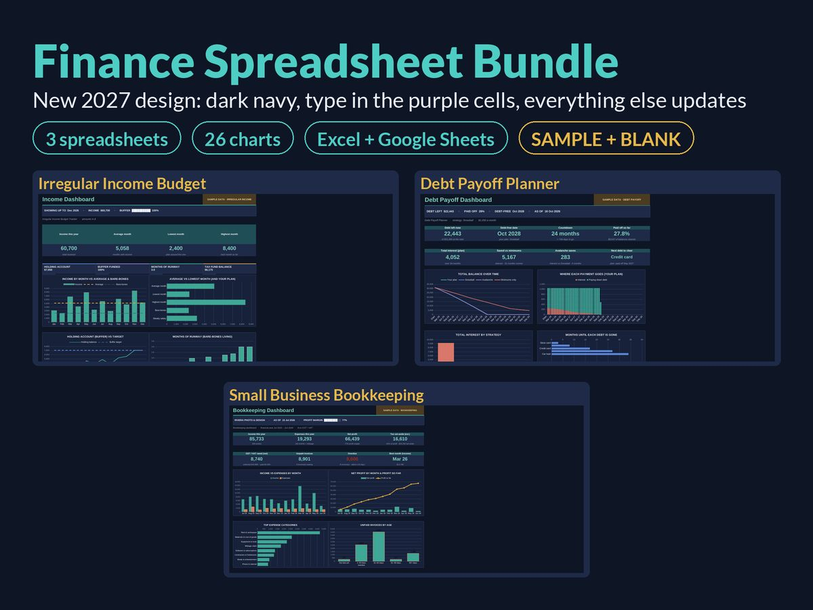

Zero-Based Budgeting Step by Step: Give Every Dollar a Job

Zero-based budgeting sounds like it means having zero money. It doesn't. It means that by the time you've finished planning, income minus everything you've assigned equals zero: every dollar, pound, euro or rupee has a job before the month begins.
That's the whole idea. It's simple, it works in any currency, and it's one of the most effective ways to stop money quietly leaking away. This guide explains how it works and walks you through setting one up step by step.
How zero-based budgeting differs from a normal budget
In a typical budget, you plan your bills and main spending, and whatever is left at the end of the month is "left over". The trouble is that leftover money rarely stays put. Without a job, it drifts into small purchases you didn't really decide to make.
In a zero-based budget, there's no "left over" line. Money that isn't needed for bills or spending is still assigned: to savings, to debt, to a sinking fund, to a goal. You still have flexibility, but every choice is deliberate.
The formula is:
Income − (bills + spending + savings + debt payments + goals) = 0
If the answer is above zero, you have money that still needs a job. If it's below zero, you've planned more than you earn and need to cut something.
Who it suits
Zero-based budgeting works well if you:
- feel like you earn a reasonable amount but never know where it goes
- want to speed up paying off debt or saving for something specific
- like having a clear plan and checking in regularly
It takes a bit more effort than a loose budget, especially in the first couple of months. If you're brand new to budgeting, you might start with our simple budget template for beginners and switch to zero-based once you're comfortable.
Step 1: Choose your budget period
Most people budget monthly. If you're paid weekly or fortnightly, you can either budget per pay period or budget per month using the income you're certain to receive. Pick one and stick with it for at least three months.
Step 2: Write down the income you'll actually have
List the take-home pay you expect to receive this month, after tax and deductions. Only include money you're confident about. Bonuses, side income you haven't been paid yet and possible refunds can be budgeted when they arrive.
A useful refinement: budget last month's income for this month. This takes some time to set up, because you need a month's income saved in advance, but once you're there, you always know exactly how much you have to work with.
If your income changes a lot from month to month, combine zero-based budgeting with the holding account method from our guide to budgeting on an irregular income, and budget your steady "salary" instead of your raw income.
Step 3: Assign money to essentials first
Start with what must be paid: housing, utilities, insurance, groceries, transport, childcare and minimum debt payments. Use real figures from recent bills and bank statements, not hopeful ones.
Step 4: Assign money to sinking funds
Next, set aside money for predictable costs that don't happen monthly: annual insurance, car servicing, gifts, school costs, holidays. Divide each expected cost by the months until it's due. Our guide to sinking funds explained covers this in detail.
This step is what stops zero-based budgets collapsing in "unusual" months, because once you look at a whole year, most unusual months turn out to be predictable.
Step 5: Assign money to goals
Now decide where you want to make progress: an emergency fund, extra debt payments, retirement savings, a house deposit. Be specific about how much goes to each.
If you have several debts, decide which to target with the extra money. Our guide to debt snowball vs avalanche explains the two main approaches.
Step 6: Assign money to flexible spending
Eating out, hobbies, entertainment, clothes, personal spending. Give each a realistic limit. Don't set them to zero unless you genuinely mean it; a budget with no breathing room tends to be abandoned.
Step 7: Get to exactly zero
Add up everything you've assigned and subtract it from your income.
- Money left over? Give it a job. Add it to a goal, a sinking fund or extra debt payments.
- Below zero? Work back through the list, starting with flexible spending, then goals. Essentials come last, and if essentials alone exceed your income, that's a sign to look at bigger changes or seek support (see our guide on how to budget on a low income).
Keep adjusting until the result is exactly zero.
A worked example
Imagine a monthly take-home income of 4,200 in any currency.
| Category | Assigned |
|---|---|
| Rent | 1,500 |
| Utilities, phone and internet | 260 |
| Groceries | 600 |
| Transport | 240 |
| Insurance | 140 |
| Minimum debt payments | 180 |
| Sinking funds (car, gifts, annual bills) | 250 |
| Emergency fund | 300 |
| Extra debt payment | 250 |
| Eating out and entertainment | 220 |
| Personal and clothing | 160 |
| Buffer for small overspends | 100 |
| Total assigned | 4,200 |
| Income − assigned | 0 |
Every unit has a job. Notice the small "buffer" line: a modest amount for the inevitable small overspends, so one unexpected purchase doesn't break the plan. These numbers are only an example; yours will differ.
Step 8: Track as you go
A zero-based budget only works if you know how you're doing during the month. Record your spending against each category, either as it happens or in a short weekly check-in.
When you overspend in one category, move money from another category to cover it. This is the key habit. The total stays at zero; you're just making a conscious trade-off ("less eating out this month to cover the car repair") instead of quietly running over.
Step 9: Review and start the next month
At the end of the month, compare what you planned with what happened. Ask:
- Which categories were consistently too low or too high?
- Did anything surprise you? Could it become a sinking fund?
- Did any money end up unassigned?
Then build next month's budget from scratch. That's where the name comes from: you start each period at zero rather than copying last month's numbers blindly. In practice, most months will look similar, but rebuilding forces you to ask whether each line still makes sense.
Common mistakes
- Forgetting irregular costs. This is the most common reason a zero-based budget fails. Sinking funds fix it.
- Being too strict. If every flexible category is near zero, the plan won't survive contact with real life.
- Not moving money when you overspend. Running over without adjusting another category means you're no longer at zero.
- Budgeting money you don't have yet. Plan with income you're sure of.
- Giving up after the first month. The first month is usually messy. By the third, your categories will be far more realistic.
Zero-based budgeting vs the 50/30/20 rule
The 50/30/20 rule (roughly half on needs, a third on wants and a fifth on savings and debt) is a useful rough guide for what a budget might look like. Zero-based budgeting is a method for building the budget itself. You can combine them: use 50/30/20 as a sense check, then assign every dollar in detail.
Tools that help
You can do a zero-based budget on paper, but a spreadsheet does the subtraction for you and shows instantly when you're above or below zero.
Our Finance Spreadsheet Bundle brings together the Irregular Income Budget Tracker, whose priority-ordered monthly budget fills essentials first, then goals, then flexible spending, the Debt Payoff Planner for planning extra debt payments, the Small Business Bookkeeping Spreadsheet and a bonus printable budget planner. It works in Excel and Google Sheets in any currency, and you can get the bundle on Gumroad. If you'd rather plan by hand, the Printable Budget Planner has a monthly budget page with planned and actual columns.
The short version
- Write down the income you're sure to receive.
- Assign money to essentials.
- Assign money to sinking funds for predictable costs.
- Assign money to savings and debt goals.
- Assign money to flexible spending.
- Adjust until income minus assigned equals exactly zero.
- Track during the month and move money between categories when needed.
- Rebuild from zero each month.
Zero-based budgeting isn't about having nothing left. It's about deciding, in advance, exactly what you want every bit of your money to do.
This guide is general information, not financial advice.
More guides
- A Simple Budget Template for Beginners (and How to Fill It In)
- How to Budget on an Irregular Income (A Step-by-Step Method)
- Sinking Funds Explained: How to Stop Big Bills Wrecking Your Budget
- How to Budget on a Low Income: A Practical, Judgement-Free Guide
- Debt Snowball vs Avalanche: Which Is Better? (With a Worked Example)
- Small Business Bookkeeping for Beginners: A Simple System for Freelancers and Sole Traders
- Wedding Budget Breakdown by Category: A Practical Starting Split
- How Much Does a Baby Cost in the First Year? How to Estimate and Plan for It
- How to Set Up a 2027 Planner You'll Actually Use
- How to Write a Resume With No Experience (With Examples)